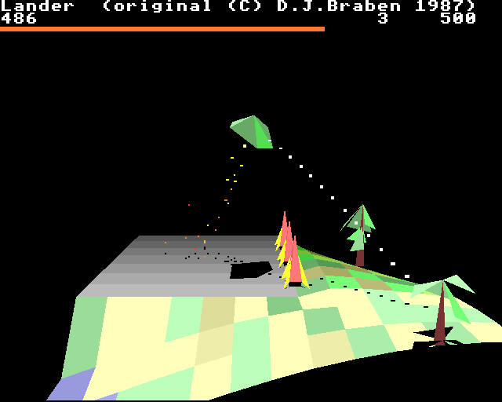
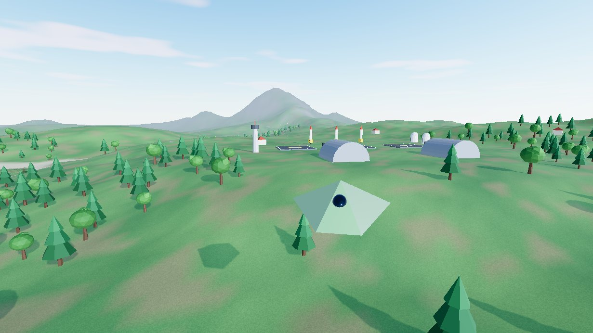

LANDER
David Braben's 1987 Archimedes classic, twice over. Pick how you want to fly.

Retro
The original game rebuilt from scratch, checked frame by frame against the real 1987 code.
- The original physics, landscape and scoring
- Archimedes graphics at 320×256, or sharper
- Save and carry on any time

Modern
The same ship and handling, let loose on a 4.5 km island with missions, new craft and combat.
- Seven missions plus free flight
- Four craft to buy in the hangar
- Real-time lighting, shadows and a reflective sea
Switch between versions any time with F2. Each keeps its own progress.
How to fly
| Mouse / WASD | Tilt the ship, exactly as in the 1987 original: how far the mouse is from the centre sets the tilt, the direction sets which way (R recentres) |
| Left button / Space / Z | Full thrust |
| Middle button / Shift | Hover (gentle thrust, as the original). H toggles an optional hover hold that keeps your height |
| Right button / F / X | Fire |
| C / M | Switch camera / enlarge the map |
| Esc / P | Pause |
Touch down gently (the LAND light turns green) and level. Sit on a friendly pad to refuel and repair. Missions earn credits to buy new craft in the hangar.
How to play
| Mouse position | Tilt the ship: how far from the centre sets the tilt, the direction sets which way |
| Left button / Z | Full thrust |
| Middle button / Space | Hover |
| Right button / X | Fire (costs a point per shot) |
| Esc / P | Pause and open the menu |
Game speed, resolution, colours and mouse speed are in Options. Your game is saved when you pause or leave the page, so Continue picks up where you left off.
Shoot trees and buildings for 20 points each. Land gently on the grey launchpad to refuel. Score 800 or more and rocks start falling from the sky, and gravity gets stronger at 1024 and 1488.